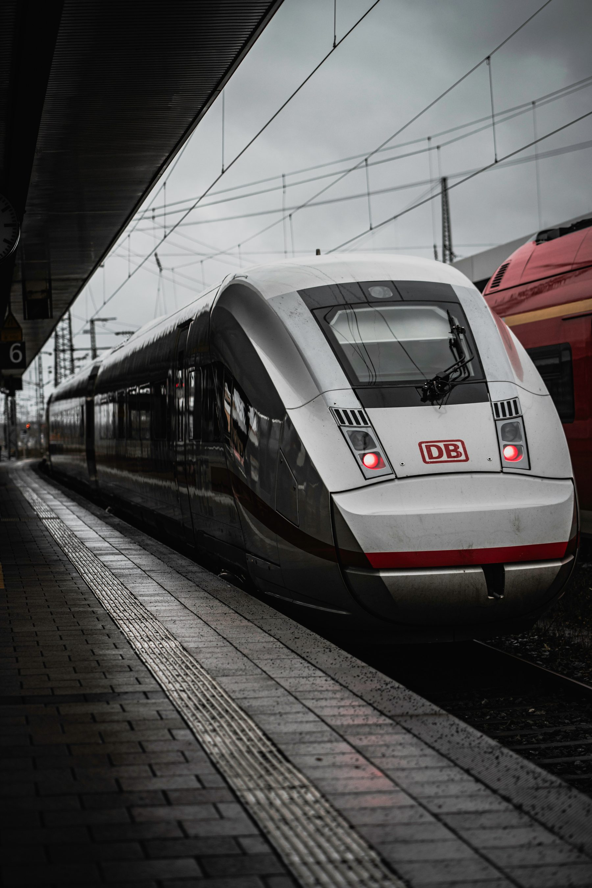
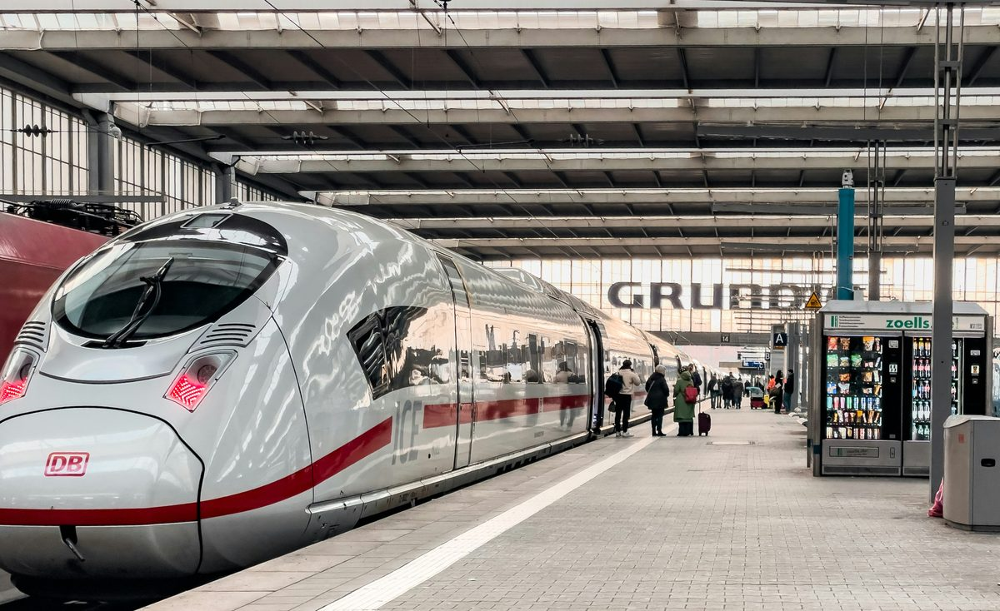
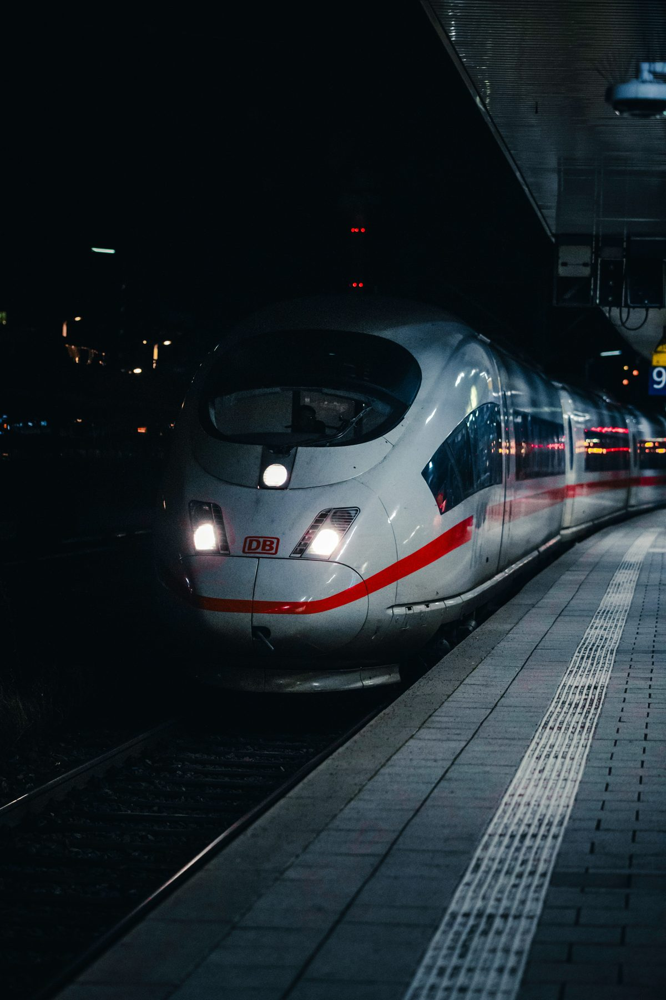
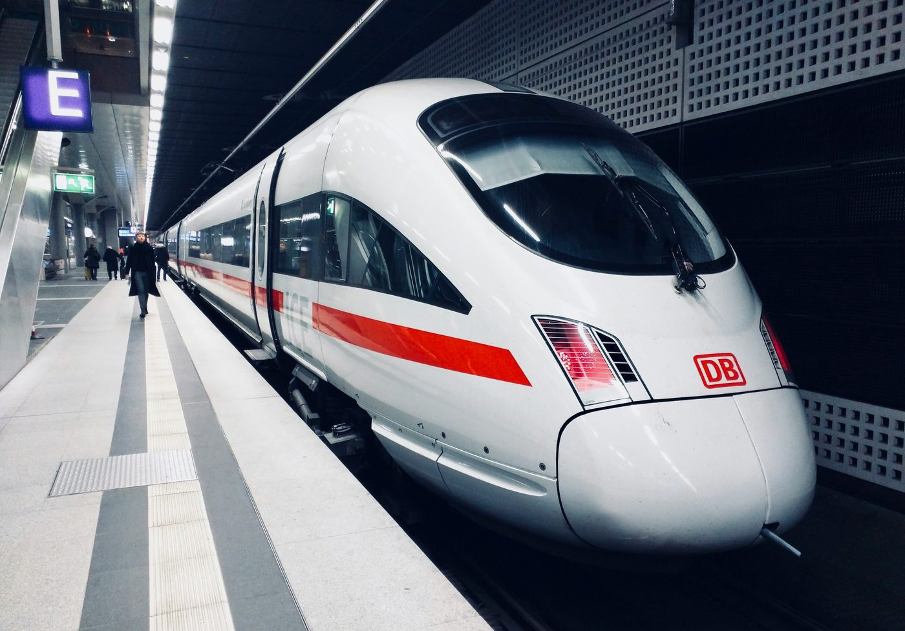
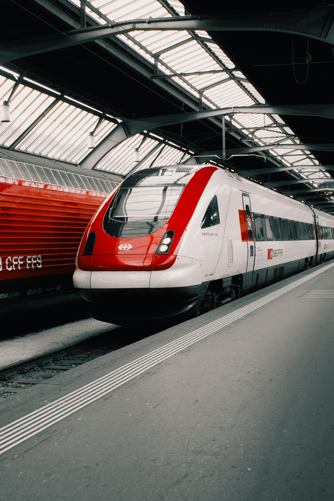
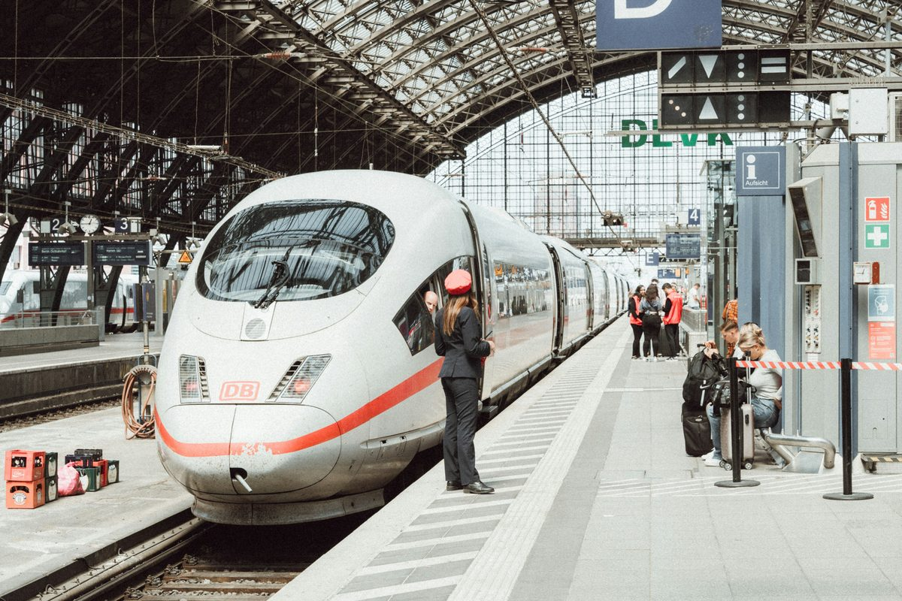

FORMA
SIN
ADORNO
Un estudio del ICE 3 como objeto: la geometría que resulta de eliminar todo lo que no reduce la resistencia del aire.

EL OBJETO
No hay locomotora. La tracción vive repartida bajo todo el tren — por eso la nariz no necesita empujar nada, solo cortar el aire.
El Velaro elimina la jerarquía clásica del tren: sin cabeza tractora, cada vagón es espacio útil. La forma del morro no es estilo, es la consecuencia directa de mover 8.000 kilovatios a través del aire a 300 km/h sin generar el estampido que produce entrar en un túnel a esa velocidad.
Este estudio documenta esa lógica: superficies que existen porque tienen una función, un rojo que aparece solo donde señala algo, y un blanco que es en realidad el aluminio visto de cerca.
EN ESTACIÓN






CADA PIEZA
TIENE UN MOTIVO
POR QUÉ
ESTA FORMA
LECTURAS
DEL OBJETO
El Velaro no tiene una parte "de diseño" y otra "de ingeniería". Son la misma decisión vista desde dos lados.
Cada generación de ICE no rediseña el tren desde cero: afina lo que la anterior dejó sin resolver.
La tracción distribuida cambió la pregunta: ya no era cómo tirar del tren, sino cómo repartir la fuerza sin que se note.
QUIÉN
LO HIZO
CUATRO
DECISIONES
ICE 1
El primer ICE. Dos locomotoras de cabeza y cola con hasta 14 coches entre medio — la arquitectura clásica del tren de alta velocidad, heredada del ferrocarril convencional.
ICE 2
Una sola locomotora y un coche de mando en el otro extremo. Pensado para dividirse: dos medios trenes pueden separarse en ruta hacia destinos distintos.
ICE 3
El objeto de este estudio. Primera generación sin locomotora: tracción distribuida bajo todo el tren. Primer ICE alemán en superar los 300 km/h en servicio regular.
ICE 4
Hereda la tracción distribuida del ICE 3, pero cambia la pregunta: no busca velocidad máxima, busca capacidad. Configuración modular de 7 a 13 coches.
DUDAS
FRECUENTES
Porque su tracción es distribuida: los motores están bajo los bogies a lo largo de todo el tren, en vez de concentrados en una cabeza tractora. Esto libera espacio y mejora la relación peso-potencia.
Es el nombre comercial que da Siemens a la plataforma de tren de alta velocidad sobre la que se construye el ICE 3. La misma plataforma se exporta con variantes a España, China, Rusia y Turquía, entre otros.
La 403 es la versión original para servicio nacional en Alemania. La 407 (Velaro D) es una generación posterior, multisistema, pensada para cruzar fronteras hacia Francia, Bélgica y Países Bajos.
Es un compromiso entre tres problemas: resistencia aerodinámica, ruido al entrar en túneles, y visibilidad para el maquinista. La curva no es estética — es la solución que satisface los tres a la vez.
En este estudio sí: lo usamos exclusivamente para señalar elementos activos o interactivos, igual que el rojo en el tren aparece en las luces de posición y las franjas de advertencia — nunca como decoración.